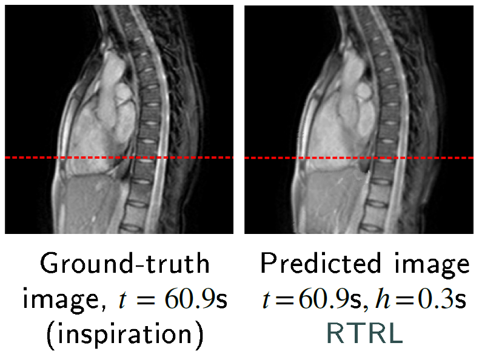
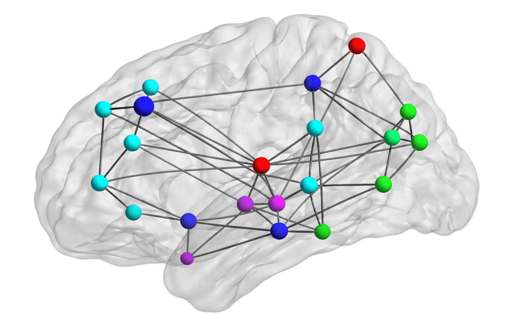

My article on chest and liver cine-MR frame forecasting with transformers and online-trained RNNs (ArXiv preprint)Graph-structured data classification based on spectral methods and the generalized likelihood ratio test
An application to Alzheimer's disease diagnosis from PET image data

1. Introduction
Many real-world datasets are not optimally represented in Euclidean space as they naturally lie on irregular structures such as graphs (e.g., molecules, social networks, or sensor networks). Brain imaging data, in particular, often exhibit structured relationships between regions. Instead of treating all features independently, in this project, the data for each subject is modeled as a signal on a graph whose nodes represent anatomical brain regions, with edge weights encoding connectivity between regions. The classification task is formulated as a hypothesis test between two representative graphs—one built from healthy controls and one built from patients with Alzheimer's disease—using spectral properties of graph signals. This approach, building on the framework introduced by Hu et al. [1], is applied here to multi-dimensional graph signals: regional statistical features derived from positron emission tomography (PET) images. Specifically, I focus on the bandlimited graph-signal setting, where the underlying noiseless signal is assumed to concentrate in low graph frequencies and higher-frequency components are modeled as additive noise. Although the application explored in this work is brain image classification, the core method—treating structured data as signals defined on graphs, transforming them using the graph Fourier transform, and performing classification via a generalized likelihood test (GLRT)—is general and applies to any graph-structured data. Notably, the ideas on graph spectral analysis discussed here are closely related to the foundations of graph deep learning. In several early studies on graph convolutional neural networks (CNNs), convolution was defined via eigendecomposition of the graph Laplacian [2], while efficient polynomial or first-order approximations of spectral graph convolutions were introduced in later architectures such as ChebNet and the graph convolutional network (GCN) [3] [4]. More broadly, modern graph neural networks (GNNs) are often discussed from two complementary viewpoints: spatial or message-passing methods, which aggregate information from neighboring nodes, and spectral methods, which use graph filters defined via the graph-Laplacian eigenspectrum. The latter viewpoint, more directly connected to the field of signal processing and the graph Fourier transform used in this work, remains particularly important, as spectral GNNs naturally capture global information and offer better expressiveness and interpretability [5]. Although I conducted this short project on graph signal processing more than ten years ago during my postgraduate studies, I revisit it in this article to highlight core concepts that remain relevant to modern machine learning.
2. Data
The data used in this work contains statistical features extracted from 142 segmented brain FDG-PET images. These images were provided by La Timone Hospital (Marseille) and correspond to 61 healthy control subjects and 81 patients with Alzheimer's disease. Each brain image was segmented into 116 regions of interest (ROIs) using WFU-PickAtlas. For each region, the first four moments (mean, variance, skewness, and kurtosis) and the entropy were computed; they proved to be useful for the discrimination between the two classes (healthy control and Alzheimer's disease) in prior work from Garali et al. [6]. The resulting data are stored as two tensors of different shapes 116 × 5 × $N_k$, where $N_k$ denotes the number of subjects in class $k$.
3. Methods
First, the 5-dimensional feature vectors containing the first four moments and entropy for each subject are normalized across brain regions, potentially improving performance. We denote by $\bar{x}_{r,s} \in \mathbb{R}^5$ the normalized feature vector associated with region $r$ and subject $s$. Subsequently, we compute the scalar feature \[ x_{r,s} = \alpha \bar{x}_{r,s} \:, \] where $\alpha \in \mathbb{R}^5$ represent region- and subject-independent linear combination coefficients. This allows constructing one fully connected, undirected graph per class, whose nodes each represent one anatomical brain region. Given two regions indexed by $i$ and $j$, its weight $W_{i,j}$ characterize overall similarity between the corresponding scalar features in each class, as follows: \[ W_{i,j} = \text{exp} \left( -\sum_{s = 1}^{N_k}{(x_{i,s} - x_{j,s})^2} \right). \] For each subject $s$, the more the features $x_{i,s}$ and $x_{j,s}$ are close to one another, the more $W_{i,j}$ becomes closer to 1, and the farther apart $x_{i,s}$ and $x_{j,s}$ are, the more $W_{i,j}$ becomes closer to 0, thereby reflecting the notion of similarity. This specific similarity metric is called the Gaussian radial basis function (RBF) kernel. For each class, we can compute the Laplacian $L$ of its reference graph, from its adjacency matrix $W$, as follows: \[ L = D - W, \] where $D$ is the degree matrix, i.e., the diagonal matrix whose diagonal elements are:
References
- Chenhui Hu, Jorge Sepulcre, Keith A. Johnson, Georges E. Fakhri, Yue M. Lu, and Quanzheng Li, "Matched signal detection on graphs: Theory and application to brain imaging data classification", NeuroImage (2016)
- Joan Bruna, Wojciech Zaremba, Arthur Szlam, and Yann LeCun, "Spectral networks and locally connected networks on graphs", arXiv preprint arXiv:1312.6203 (2013)
- Michaël Defferrard, Xavier Bresson, and Pierre Vandergheynst, "Convolutional neural networks on graphs with fast localized spectral filtering", Advances in neural information processing systems (2016)
- Thomas N. Kipf and Max Welling, "Semi-supervised classification with graph convolutional networks", arXiv preprint arXiv:1609.02907 (2016)
- Deyu Bo, Xiao Wang, Yang Liu, Yuan Fang, Yawen Li, and Chuan Shi, "A survey on spectral graph neural networks", arXiv preprint arXiv:2302.05631 (2023)
- Imène Garali, Mouloud Adel, Salah Bourennane, and Eric Guedj, "Histogram-based features selection and volume of interest ranking for brain PET image classification", IEEE journal of translational engineering in health and medicine (2018)